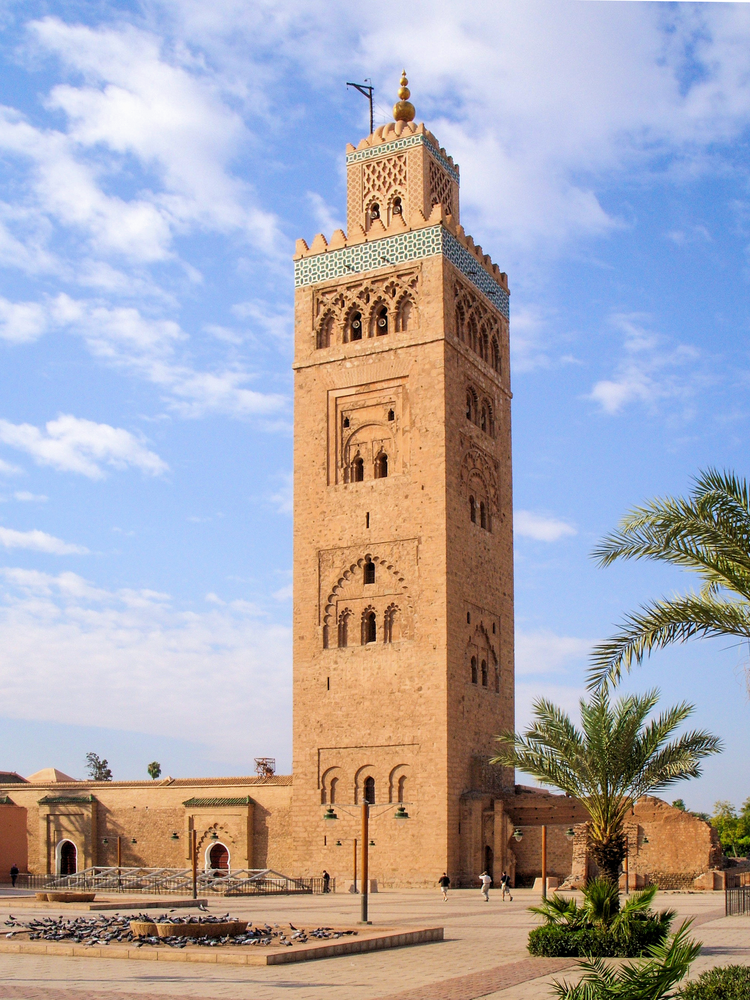

Une notion fausse dans son principe et dangereuse dans ses conséquences.
Né à Constantine en 1905, ingénieur de formation. Il aborde le déclin comme un ingénieur devant une panne : un mécanisme grippé, qu’on démonte pièce par pièce.
Son livre, Les Conditions de la renaissance (1949), cherche déjà les conditions d’un relèvement.
Aptitude intérieure d’une société à être colonisée : un état de moindre vitalité, antérieur à la conquête, qui rend la domination possible et la prolonge.
L’acte de l’autre : sa force, sa volonté. Responsabilité entière.
L’état du soi : le seul terrain où le colonisé garde prise.

Bennabi mesure l’état d’une civilisation entière : sa capacité à inventer. Quand elle s’épuise, le reste suit, et la faiblesse matérielle arrive en dernier, comme un symptôme.
Après l’apogée almohade, la même forme se répète ; mais l’invention, elle, s’est éteinte.
Huit modules l’ont établie. La colonisabilité y ajoute une seconde question, que le colonisé peut s’adresser à lui-même : celle de son propre état, le seul terrain où il garde prise.
Un diagnostic n’est pas un verdict.
Un médecin qui nomme la maladie de son patient ne dit pas qu’il méritait d’être malade.
La dénonciation pure, celle qui ne regarde que le colonisateur, laisse le colonisé passif : il attend le départ de l’occupant comme seule issue. Chez Bennabi, la transformation intérieure devient le préalable de la libération.
Le piège qu’il désamorce : se raconter que rien ne dépend de soi, que tout vient de l’autre. Ce discours transforme une explication en excuse, et une excuse en prison.
Mais ce qui est auto-entretenu peut être arrêté.
Tout un courant réformiste pensait alors de même. Chez Mohamed Iqbal, on retrouve la même idée : la renaissance commence par l’individu avant de gagner la société.
L’outil vaut donc pour tout public confronté à la domination. Il invite à dépasser la seule accusation de l’autre, qui reste nécessaire, pour interroger aussi ce qui, en soi, reconduit la dépendance.
La colonisation, acte du colonisateur. La colonisabilité, état intérieur du colonisé.
Le post-almohadisme, ces siècles de recopiage. Il prolonge Ibn Khaldoun, six cents ans après lui.
Agir d’abord sur ce qu’on peut changer. Nommer une faiblesse, c’est rendre le pouvoir d’agir dessus.
Bennabi a diagnostiqué une civilisation. Reste à descendre dans un seul être : ce que la domination fait à un corps, à une psyché.
C’est la clinique de Frantz Fanon, psychiatre à Blida.